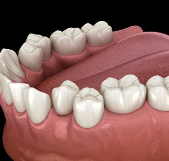
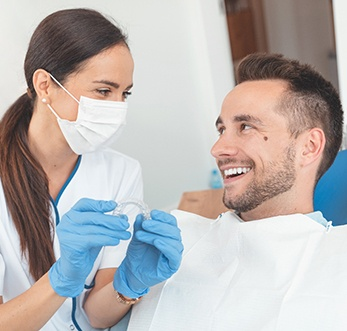

Welcoming New and Existing Patients
Are you suffering from self-confidence issues because of your crooked, gapped, or generally misaligned teeth? Perhaps you wish they were straighter, but you don’t want to spend years with a mouthful of metal. Fortunately, we at Sweet Smiles Family Dentistry offer a solution – Invisalign. This series of clear braces can straighten teeth with the discomfort typical of traditional metal braces. Whether you’re a working adult who doesn’t want to compromise their professional appearance or you’re heading off to college and want to make a great first impression, Invisalign clear braces from our Grafton, WI cosmetic dentist can help you achieve your dream smile. Keep reading below to learn how.
Invisalign uses a series of clear plastic aligner trays to gradually shift your teeth into a straighter position. The aligners are custom-made according to digital impressions that we take at your initial consultation. Every set focuses on straightening a tiny portion of your smile until your whole grin is in the desired position.
It’s natural to feel eager to begin Invisalign treatment once you learn about the incredible benefits it provides. However, before you can proceed, you must have a consultation with Dr. Muddana to ensure that it’s the best option for you. Although it can potentially benefit anyone with gapped, crooked, or overcrowded teeth, those with more severe misalignments might do better with traditional orthodontics.
Continue reading to learn more about the different types of issues that can be addressed with this clear alternative, and feel free to contact us if you have additional questions.

If your teeth are so crowded that they overlap, it can be difficult to clean them. You need to be able to access all sides to brush and floss away plaque and bacteria thoroughly. Otherwise, you could develop issues like cavities and gum disease that put your oral health at risk. Invisalign can shift your pearly whites so they’re arranged evenly side-by-side for easier maintenance.
Overly wide spaces between your teeth can happen if they are too small, you have an overly large jawbone, or you were prone to sucking your thumb as a child. Whatever the cause, food and other debris can damage your gum tissue more easily when it’s not sufficiently covered. By rearranging your grin, Invisalign helps you avoid gum damage and disease.
Invisalign can also help with mild to moderate malocclusions (or bite misalignments.) If your upper arch extends too far past your lower one, then you likely have what’s referred to as an overbite. Teeth that protrude too far are unprotected and, therefore, more likely to sustain an injury. On top of that, you could also develop jaw pain, speech issues, and uneven enamel wear and tear.

The reverse of an overbite is an underbite, which occurs when your bottom teeth are evenly aligned with or go beyond your upper ones when you bite down. It’s often the result of genetic inclination, oral trauma, or thumb-sucking as a baby.
Unfortunately, an underbite can restrict your air passages when you’re trying to sleep at night, in addition to challenges chewing and speaking. Invisalign can address this effectively, but additional attachments and rubber bands might be required.
You may have a crossbite if you have one or more bottom teeth that lay over your front teeth anywhere in your grin. It can be caused by poor oral habits, premature loss of baby teeth, or genetics. It’s important to readjust your jaw alignment to avoid an increased long-term risk of gum disease, tooth decay, jaw pain, headaches, and bruxism (teeth grinding).
Some people have front teeth that don’t touch at all when their jaw closes, which is referred to as an open bite. This can cause excessive damage to the enamel of your back teeth, leaving them more vulnerable to cavities, gum disease, and injury. Not only that, but you can also develop speech impediments because it’s harder to place your tongue against your teeth to form certain words and sounds clearly.
No two smiles were created equal, so the length of Invisalign treatment can vary greatly from patient to patient. Generally, though, the vast majority of patients complete their treatment in just 12 to 18 months – considerably less time than with traditional braces!
To ensure you attain a straight smile on schedule, be sure to wear your aligners for at least 20 to 22 hours a day. Essentially, you should only remove them to eat, drink (anything besides water), brush, and floss.
Additionally, oral health issues like cavities and gum disease can prolong your treatment, so be sure to attend your regular checkups and cleanings as well as practice diligent at-home oral hygiene.
Compared to traditional metal braces, Invisalign offers several advantages, including:
Invisalign is a great solution for adults who want to achieve a straighter smile without broadcasting their treatment to the world. Although some serious orthodontic issues – such as severely rotated teeth – are best treated with traditional braces, Invisalign can address a wide variety of dental flaws, such as:
If you’re interested in finding out whether Invisalign clear braces are the right choice for you, schedule a consultation with one of our dentists today to determine your candidacy. We will be more than happy to talk about your smile goals and create a plan to help you achieve them. Give us a call today!
No two patients have the same exact smile, and each one deserves individualized care at Sweet Smiles Family Dentistry. As a result, we are not able to provide a quote for Invisalign treatment until we’ve had the opportunity to examine your teeth. During your consultation with Dr. Muddana or Chanana, we will discuss the financial details of treatment with you transparently so you can make an informed decision and know what to expect in terms of cost.

The most important factor that influences the price of Invisalign treatment is how severe your teeth’s misalignment is. Clearly, for more advanced cases, it will take more time to treat, which involves more aligners and incurs a higher cost. Also, your ability to follow directions can impact how long it takes to achieve the final results, also affecting the overall cost. After we’ve seen your teeth, we consider these factors and can give you a clearer idea of how much you’ll owe.
You might have seen ads for mail-in aligners that claim to give you the same results as Invisalign for only a portion of the cost. However, they don’t tell you that you could end up spending even more overall because you perform the impressions yourself and your progress isn’t supervised.
In contrast, Invisalign is supervised from beginning to end by one of our licensed dentists. This means that if you lose an aligner, get off course with treatment, or run into any other problems, we can adjust your treatment plan so that you still end up with the correct results.
Sometimes. Coverage ultimately depends on your benefits. While some plans do pay for a portion of the cost of Invisalign treatment as part of their orthodontics coverage, others do not. When you meet with our team to see whether you’re a good candidate for Invisalign, we will also take a closer look at your insurance plan and try to find ways to save you as much as possible.
If you do not have dental insurance, you can ask us about our in-office discount plan and see if this service is included in it. Regardless of whether insurance covers Invisalign treatment or not, you may not be able or wish to pay for treatment in a one-time, lump-sum payment. We can help you get low-interest financing with CareCredit, which separates the cost into easier monthly payments, making this treatment fit more comfortably into your budget.
Now you know all about the process of getting Invisalign, the benefits of choosing this discreet orthodontic treatment, and who is a good candidate – you’re on your way to a new and improved smile! The next step? Scheduling an initial consultation. If you would prefer to do a bit more research before then, keep reading for the answers to a few of the most frequently asked questions we get from patients. If you would prefer to speak directly with our team about any questions you have or you are simply ready to schedule your appointment, don’t hesitate to get in touch with our team!
To properly enunciate your words, your tongue makes a series of diverse movements against the back of your teeth. Therefore, some patients do experience a slight lisp as they adjust to the presence of the aligners. With that being said, many patients can articulate clearly from the beginning! Those that do experience a bit of a learning curve can speed up the process by reading aloud and practicing the more difficult words repeatedly.
Caring for your aligners is a crucial part of maintaining their clear appearance and correct shape. So, make sure to implement the below best practices throughout your treatment:
If you lose your Invisalign trays, do your best not to panic. Calmly retrace your steps, paying special attention to the small spaces they could’ve fallen into. Once you’ve confirmed they are missing, get in touch with our team. Neglecting to wear your aligners for 20 to 22 hours a day can significantly derail your treatment timeline, which is why we need to work quickly. (Under no circumstance should you attempt to keep it a secret and fix the situation on your own by reverting to a previous aligner or moving onto the next set).
Invisalign was introduced in the late 1990s, and in the last two decades has helped millions of patients around the world discreetly achieve their smile goals. Plus, the clear aligners can address everything from minor misalignment to complex crowding and have a whopping 96% satisfaction rating!
Although there aren’t any dietary restrictions with Invisalign, the development of an oral health problem, like a cavity, will bring your teeth-straightening journey to a temporary stop. So, it’s a good idea to keep ice cream, candy, soda, and other sweet treats to a minimum. It’s also smart to exercise caution with extremely crunchy foods, like raw almonds and hard pretzels, since they can cause one of your attachments to break off. In short, even though you’re free to eat anything you want during your time with clear aligners, you should do your best to stick to a well-balanced, healthy diet.
Invisalign has an average treatment timeline of only 12-18 months. That said, your time with braces could be shorter or longer. It depends largely on the complexity of your case and the details of your treatment plan, including how often you switch aligners. At your initial consultation, we will provide you with an estimate and let you know what you can do to avoid unwanted delays (i.e., taking great care of your teeth at home, prioritizing your progress visits, wearing your aligners for 20+ hours a day).
It’s very normal to experience soreness from the movement of your teeth, particularly in the hours following the transition to a new aligner. The good news is that it’s only temporary. Plus, using a cold compress, taking OTC pain medication, and eating soft foods will help alleviate any discomfort you feel even sooner.
Invisalign aligners are created from impressions of your teeth, and they are crafted from see-through plastic. That combined with the fact that they are low-profile means they essentially look like clear molds of your teeth. Once they are on, they blend in, ensuring no unwanted attention is drawn to your smile during your orthodontic treatment.
Although Invisalign treatments are personalized to each patient, there are certain aspects that are universal. For example, if you don’t wear your aligners for the large majority of the day, you will fall off-track with your treatment plan. Not only can this lead to added expenses, but it can also be frustrating because it prolongs the teeth-straightening process. So, make wearing your aligners for 20+ hours a day a priority. If you aren’t sure where to start, use the stopwatch on your phone as a guide!
You need to remove your aligners before drinking anything other than water, including coffee. There are a few reasons for this, including that hot beverages can warp the plastic and dark-colored drinks can leave behind stubborn stains. So, feel free to indulge in this beloved caffeinated beverage throughout your orthodontic treatment – just take your aligners off first!
Tip: Drink your coffee with a meal instead of separately; it cuts down on your amount of aligner-free time!
9:00am – 6:00pm
9:00am – 6:00pm
9:00am – 6:00pm
9:00am – 6:00pm
8:00am – 2:00pm